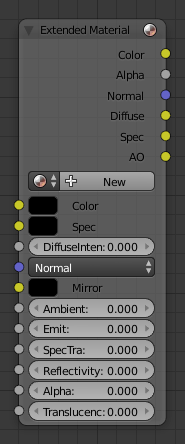

Extended Material Node¶

Extended Material node.
Adds additional input and output sockets to the Material Node. Only the additional sockets are listed.
Inputs¶
- Mirror
- Color of mirrored reflection.
- Ambient
- Amount of global ambient color the material receives.
- Emit
- The emissivity, which is the amount of light to emit.
- Specular Transparency
- Is the alpha for the specular color.
- Reflectivity
- The degree to which the material reflects light.
- Alpha
- Transparency of the material by setting all pixels in the alpha channel to the given value.
- Translucency
- Amount of diffuse shading on the back side.
Properties¶
This node has no additional properties.
Outputs¶
- Diffuse
- Value of the diffuse color.
- Specular
- Value of the specular color.
- AO
- Value of the Ambient Occlusion.